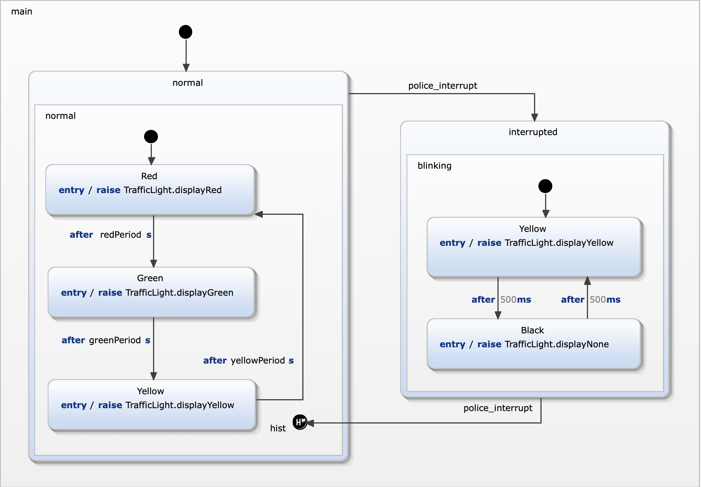

In this exercise you modeled a statechart extension using a test driven approach. The result should be comparable to the follwing statechart...

| requirement | modelling approach |
|---|---|
| R8a: when regular operation is resumed the traffic light restarts with the last active light color red (R), green (G), or yellow (Y) on. | Instead of targeting state normal when returning from state interrupted the transition targets a history within state normal. |